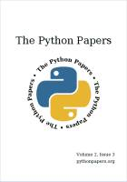

Esta página contiene enlaces a los números publicados de la revista The Python Papers en 2008 - 2007 - 2006.
Página web: The Python Papers - Blog
vol 3 nº 2 - 2008 septiembre
Descarga (PDF 4.3 MB, español)
vol 3 nº 1 - 2008 abril
Descarga (PDF 5.1 MB, español)
vol 2 nº 4 - 2007 diciembre
Descarga (PDF 7.9 MB, español)

vol 2 nº 3 - 2007 julio
Descarga (PDF 1.2 MB, español)
vol 2 nº 2 - 2007 mayo
Descarga (PDF 1.8 MB, español)
vol 2 nº 1 - 2007 febrero
Descarga (PDF 1.0 MB, español)
vol 1 nº 1 - 2006 noviembre
Descarga (PDF 0.3 MB, español)